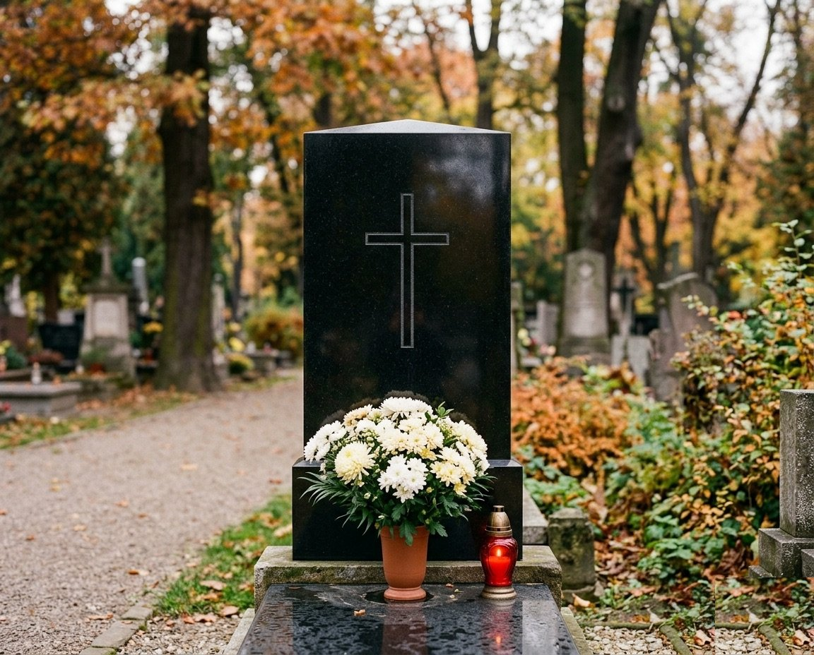
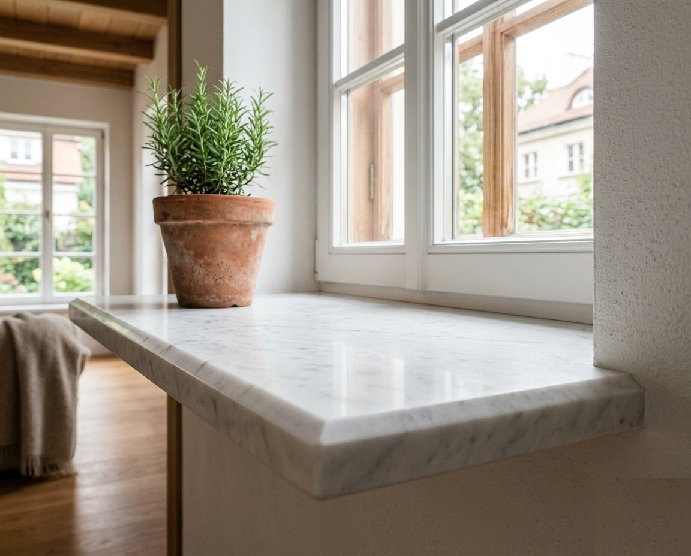
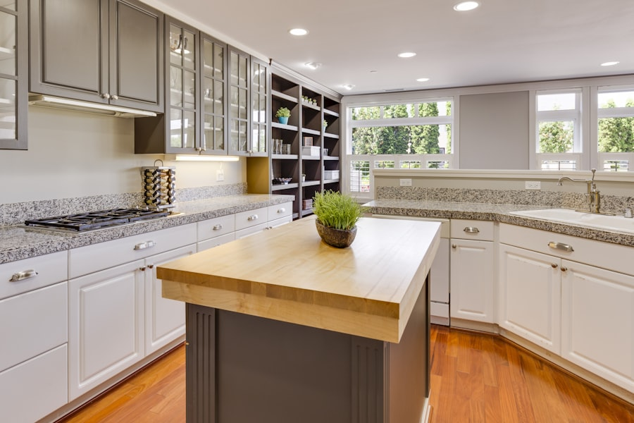

Nagrobki
Pomniki pojedyncze, podwójne i rodzinne. Liternictwo, renowacja, montaż na miejscu.
Samodzielnie tniemy, obrabiamy i montujemy naturalny kamień. Wspólnie z Państwem dobieramy każdy element, gwarantując solidne i godne wykonanie całości, bez presji i pośpiechu.
30 lat praktyki kamieniarskiej. Ten sam warsztat, ta sama jakość.

Pomniki pojedyncze, podwójne i rodzinne. Liternictwo, renowacja, montaż na miejscu.

Parapety wewnętrzne i zewnętrzne, cięte na wymiar. Wykończenie polerowane, szczotkowane lub matowe.

Blaty z granitu i marmuru. Wycięcia pod zlew i płytę grzewczą, montaż na miejscu.